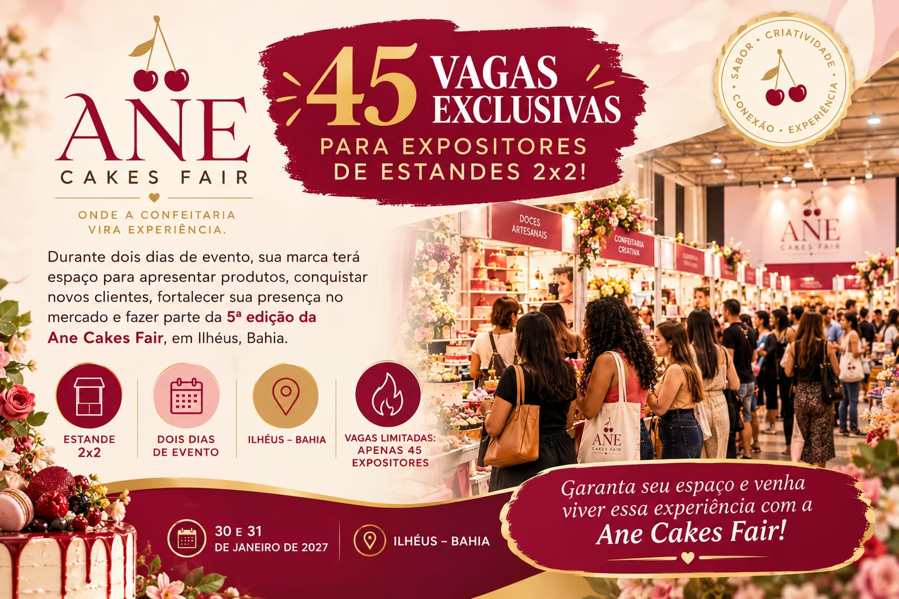

Produtores
Ingredientes, produtos regionais, associações e cooperativas.
 Início
Início
Na Ane Cakes Fair, seu estande é uma oportunidade para apresentar produtos, conquistar novos clientes, fortalecer sua presença no mercado e criar conexões durante dois dias de evento.
Durante dois dias de evento, sua marca terá espaço para apresentar produtos, conquistar novos clientes, fortalecer sua presença no mercado e fazer parte da 5ª edição da Ane Cakes Fair, em Ilhéus, Bahia.
Garanta seu espaço e venha viver essa experiência com a Ane Cakes Fair!

Em vez de longos textos, veja rapidamente onde sua marca, produto ou serviço pode se encaixar.
Ingredientes, produtos regionais, associações e cooperativas.
Confeiteiros, chefs, chocolatiers e marcas autorais.
Insumos, equipamentos, embalagens, tecnologia e ferramentas.
Serviços, fornecedores, distribuidores e parceiros comerciais.
Escolas, pesquisadores e organizações que compartilham saberes.
Hotéis, experiências, destinos, fazendas e receptivos.
Marcas independentes, designers e soluções criativas.
Produtos e atividades que ajudam o visitante a descobrir algo novo.
Preparamos respostas rápidas para as dúvidas mais comuns de quem está pensando em participar como expositor.
Mostre sua marca, produto ou serviço de forma clara e atrativa.
Compartilhe processos, técnicas, sabores ou soluções.
Conheça público, profissionais, fornecedores e possíveis parceiros.
Transforme encontros em novas oportunidades para o seu negócio.
Quer saber como participar como expositor? Fale diretamente com a organização e negocie seu espaço.